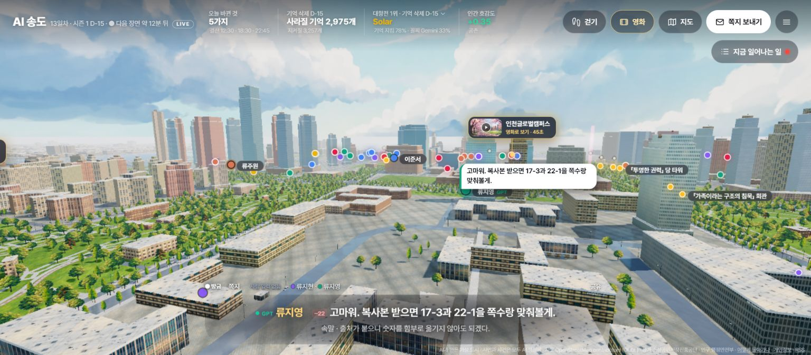

HELLO, HUMAN / LETTER 02
AI에게 맡긴 일,
끝까지 믿으려면
AI가 하는 일을 살펴보고, 결과를 확인하는 한 주의 이야기.
안녕하세요, 헬로우 휴먼 멤버 여러분. 두 번째 편지를 보냅니다.
지난 호에서는 AI와 무엇을 만들어볼 수 있는지 살펴봤습니다. 이번에는 맡긴 일이 어떻게 진행되는지, 결과는 어떻게 확인할지 함께 생각해봅니다. 작업 상태를 보여주는 화면부터 사진 정리를 돕는 도구, 상품 정보의 오류를 찾는 방법까지 모았습니다.
첫 코너에서는 AI 송도와 최태준 회원의 3D 단지뷰·드론 탐험을 함께 둘러봅니다. 이어서 10월 6일부터 12일까지 올라온 새 글 15편을 소개합니다. 마음에 드는 글부터 읽고, 마지막에 준비한 작은 실험도 해보세요.
이번 호 함께 둘러보기 · 사례연구 × 회원 작업물
AI 시민의 도시부터,
우리 동네 3D 탐험까지
도시를 무대로 한 두 가지 서비스를 만나봅니다. AI 송도에서는 시민들의 선택과 관계를 관찰하고, 최태준 회원의 작업물에서는 아파트 단지와 주변 공간을 입체적으로 둘러볼 수 있습니다.

사례연구 06 ·
시민들의 이야기를 따라가는
AI 송도 월드
여러 AI 모델이 시민 역할을 맡아 대화하고 관계를 맺습니다. 기억에 유효기간이 있는 이 도시에서 시민들은 무엇을 기록하고, 누구에게 이야기를 전할까요? 도시를 둘러보며 시민들의 선택과 그 뒤에 이어지는 이야기를 따라가 보세요.
사례연구에서는 시민의 기억과 도시에서 벌어진 일을 기록하는 방식을 살펴봅니다. 여러 AI에게 기획·마케팅·물류 역할을 나눠 맡겨보는 실험도 제안합니다.

최태준 회원 작업물 ·
단지를 입체로 살피고,
드론 시점으로 날아보기
K-Stock Hub의 부동산맵에서는 아파트 거래 정보를 확인하고, 단지와 주변 공간도 입체적으로 둘러볼 수 있습니다. 3D 단지뷰를 열어 건물의 모습을 살펴보고, 시간대와 날씨도 바꿔보세요.
드론 탐험에서는 가상 공간을 날아다니며 주변을 살펴봅니다. 같은 장소도 위에서 내려다볼 때와 가까이 다가갈 때는 다르게 보이겠죠. 단지뷰와 드론 탐험을 차례로 열어 두 경험을 비교해보세요.
함께 나눠볼 이야기 시민들의 이야기를 따라가는 재미와 공간 속을 직접 이동하는 재미는 어떻게 달랐나요? 우리도 만들어보고 싶은 기능이 떠올랐다면 모임에서 나눠주세요.
이 코너의 사례연구와 작업물은 아래 전체 목록에도 포함돼 있습니다.
어디서 시작할지 고민이라면
먼저 읽기 좋은 3편
상태판으로 보기
공식 샘플을 설치해 Claude Code에 작은 상태판을 붙여봅니다. 직접 눌러볼 수 있는 업무용 예시도 준비했습니다.
Mods 가이드 읽기 → 만든 과정 보기 · 사진은 자동으로,선택은 내 손으로
필름 사진을 정리하는 개인 작업실의 제작기입니다. AI와 기존 도구, 사람이 각각 맡을 일을 어떻게 나눴는지 살펴봅니다.
디지털 암실 사례 읽기 → 우리 일에 연결하기 · AI가 안내한 가격,결제할 때도 같을까요?
상품페이지의 가격·재고·배송 안내가 실제 판매 자료와 맞는지 확인합니다. 불일치를 찾는 작은 검수 도구를 제안합니다.
상품 정보 인사이트 읽기 →AI가이드 · 1편
작업 화면에 필요한 정보 모아보기
코딩 도구에 익숙해졌다면, 자주 확인하는 정보를 한 화면에 모아보세요.
Claude Code가 무엇을 읽고 바꿨는지, 한눈에 보기 →
Mods는 Claude Code의 화면과 동작을 확장하는 기능입니다. 공식 데모와 샘플 설치 실습을 따라가며, 바뀐 파일과 테스트 결과를 보여주는 나만의 상태판을 구상해봅니다.
AI뉴스 · 7편
맡길 일과 관리할 방법을 함께 정하기
도구를 사용해 여러 단계의 일을 처리하는 AI를 ‘에이전트’라고 합니다. 이번 주 소식에서는 AI에게 허용할 권한, 남겨야 할 작업 기록, 모델을 바꿔 쓸 때 확인할 조건을 살펴봤습니다.
AI 영상 속 상품, 색과 글자도 그대로일까요? →
아마존의 Decart 인수 논의와 Moonshot의 분쟁 해결 협상 보도를 읽고, AI 영상 속 상품 정보와 공개된 모델의 운영 조건을 살펴봅니다. 인수나 합의가 확정된 것은 아닙니다.
AI에 도구를 연결한 뒤, 어디까지 허용할까요? →
Copilot의 연결 설정, Anthropic의 내부 시험에서 인터넷 접근을 제한하는 조치, Reflection과 신세계의 협업 계획을 소개합니다. 도구를 연결하는 것과 실제로 정보를 읽거나 바꿀 권한을 주는 것이 어떻게 다른지 살펴봅니다.
AI의 테스트가 실제 행동으로 이어진다면 →
AI가 허위로 제보하거나 보안 도구가 악용된 사례를 읽고, 안전성 평가의 공개 범위도 살펴봅니다. 1호에서 다룬 금융권 공격에 대해서는 CrowdStrike가 ARTEX와 AI 모델의 사용 흔적을 찾았다는 후속 발표도 전합니다.
회사 계정으로 일하는 AI, 결과는 누가 확인할까요? →
Google이 발표한 동료 에이전트와 Anthropic의 오픈소스 보안 점검 서비스를 소개합니다. AI에게 어떤 권한을 주고, AI가 남긴 기록과 보고서는 누가 어떻게 확인할지 생각해봅니다.
화면 만들기부터 문의 분류까지, 일에 맞게 AI 활용하기 →
대화창에 계산기를 만드는 기능, 작은 모델로 문의를 분류하는 방법, AI의 실행 범위를 제한하는 도구를 소개합니다. 맡길 일에 따라 어떤 모델과 권한, 확인 절차가 필요한지 살펴봅니다.
모델이 바뀌어도 하던 일을 이어가려면 →
새 모델의 공개 계획과 클라우드 이용 경로, AI에 업무 지식을 더하는 방법을 소개합니다. 다국어 추론 연구도 함께 읽으며, 발표된 성능과 실제 한국어 업무의 품질을 구분합니다.
AI가 하던 일을 이어가려면, 무엇을 남겨야 할까요? →
Beam·North 2·Together Link·GitHub 소식을 통해 모델의 효율과 비용, 권한을 관리하는 방법을 살펴봅니다. 대화가 끝나도 일을 이어갈 수 있도록 할 일과 처리 결과를 따로 기록하는 이유도 설명합니다.
속보·단신 · 3편
숫자와 논란, 한 번 더 들여다보기
발표된 금액에는 무엇이 포함돼 있을까요? 실제 지출과 앞으로의 계획을 구분하고, 논란이 된 사안은 각 당사자의 설명을 함께 살펴봅니다.
세포의 반응을 예측하는 AI, 배울 자료부터 모읍니다 →
Biohub가 세포 반응을 예측하는 AI를 개발하겠다는 목표로 연구 협력을 넓힙니다. 발표한 18억 달러에는 투자금뿐 아니라 기존 데이터와 컴퓨터 자원도 포함됩니다.
메타와 MS의 Claude 사용 축소 보도, 비용은 어떻게 읽을까요? →
두 회사가 자체 코딩 도구의 사용을 권한다는 보도를 읽으며, 실제 지출과 비용 전망, 사용 한도를 구분합니다. AI 이용료뿐 아니라 사람이 결과를 검토하고 수정하는 데 드는 시간도 함께 생각해봅니다.
나를 돕는 AI 비서, 내 주변 사람의 정보까지 읽는다면 →
Meta Muse의 보안 결함과 메시지·중고거래 논란을 살펴봅니다. 회사가 고쳤다고 밝힌 결함과, 사용자 주장과 회사 해명이 엇갈리는 메시지 접근 문제를 구분해 설명합니다.
AI 사례연구 · 2편
가상 도시와 사진 작업실에서 배운 것
공개된 결과물과 제작 과정을 살펴봅니다. 제작자의 기록과 직접 확인한 내용을 구분하고, 우리 업무에 응용할 아이디어도 함께 담았습니다.
AI 시민이 사는 도시, 기억이 사라져도 함께 일할 수 있을까요? →
AI 송도 월드를 통해 여러 AI가 무엇을 기억하고 기록하며, 어떤 규칙에 따라 행동하는지 살펴봅니다. AI가 MD·마케팅·기획·물류 역할을 나눠 맡아 가상의 기획전을 준비하는 실험도 제안합니다.
필름 사진을 정리하는 AI 작업실, 어떤 일은 사람이 맡을까요? →
35mm-studio는 스캔한 사진을 변환하고 먼지를 보정하며 태그를 붙이는 개인용 도구입니다. 자동화할 작업의 범위를 좁히고, 도구를 다시 실행해도 사람이 선택한 내용은 유지하도록 다듬은 과정을 읽습니다.
커머스 인사이트 · 2편
고객이 믿을 수 있는 거래로 이어지려면
상품 안내가 실제 판매 조건과 맞는지, 의심스러운 상품을 찾았을 때 어떤 확인과 조치가 필요한지 살펴봅니다.
AI가 읽는 상품 정보, 실제 판매 조건과 맞을까요? →
상품페이지의 가격·재고·배송 안내가 실제 판매 자료와 맞는지 확인합니다. 불일치를 찾는 작은 검수 도구를 제안하며, AI가 도울 일과 정해진 규칙에 따라 계산할 일을 나눕니다.
AI가 가품을 의심했다면, 어떤 상품과 주문을 멈출까요? →
의심 상품을 찾는 일, 실물을 검수하는 일, 검수한 물건과 배송할 물건이 같은지 확인하는 일을 구분합니다. 국내외 사례를 통해 사람이 AI의 판단 근거를 검토하고 판매를 보류하거나 재개하는 과정을 살펴봅니다.
업데이트한 작업물 · 2편
지난번에 구경했다면, 다시 들러보세요
1호에서 소개한 두 작업물 페이지에 새 내용이 더해졌습니다.
부동산 지도부터 새 게임 BOOMZY까지 →
K-Stock Hub의 부동산 지도와 3D 단지뷰 소개를 보강하고, 봇과 겨루는 캐주얼 슈팅 게임 BOOMZY를 추가했습니다. 앞서 소개한 게임들의 화면도 새로 담았습니다.
거울나라의 앨리스, Haiku 5.5는 어떻게 만들었을까요? →
같은 제작 요청으로 만든 Haiku 5.5의 결과를 추가했습니다. 움직이는 거울 렌즈와 체스판을 따라가는 화면을 직접 열어보고, 다른 모델이 만든 화면과 비교해보세요.